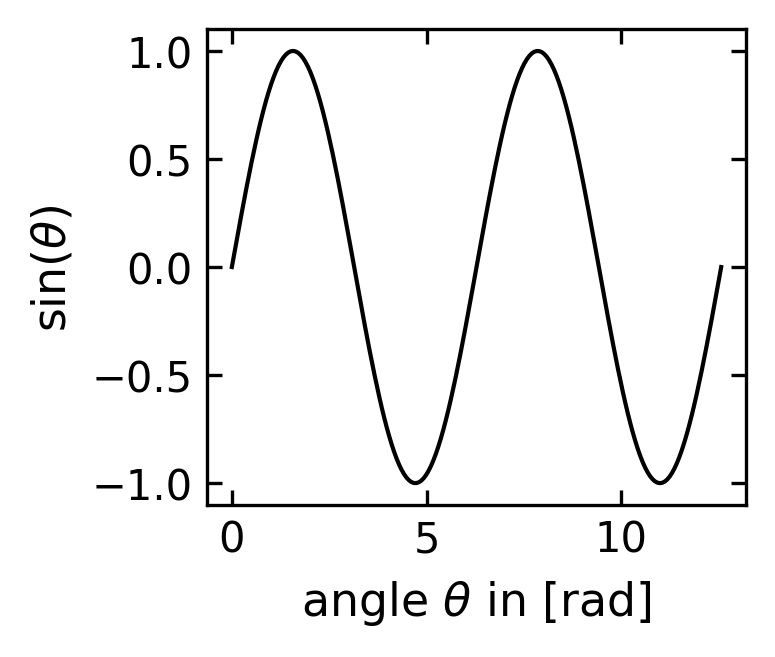
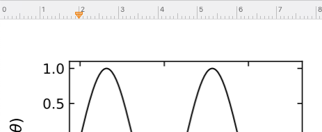
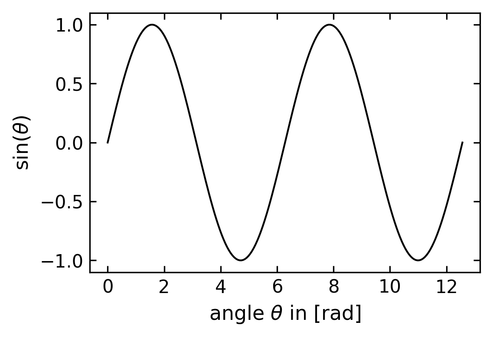
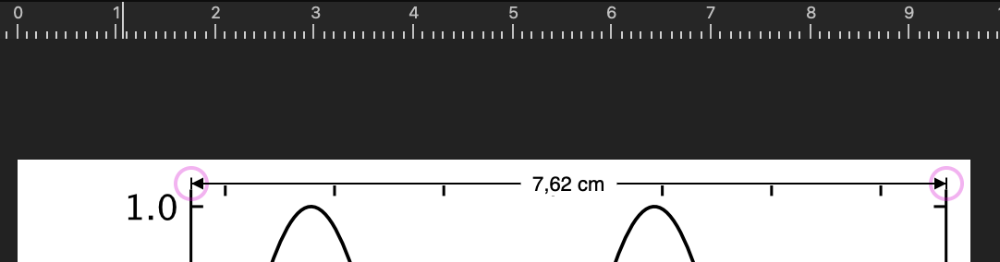
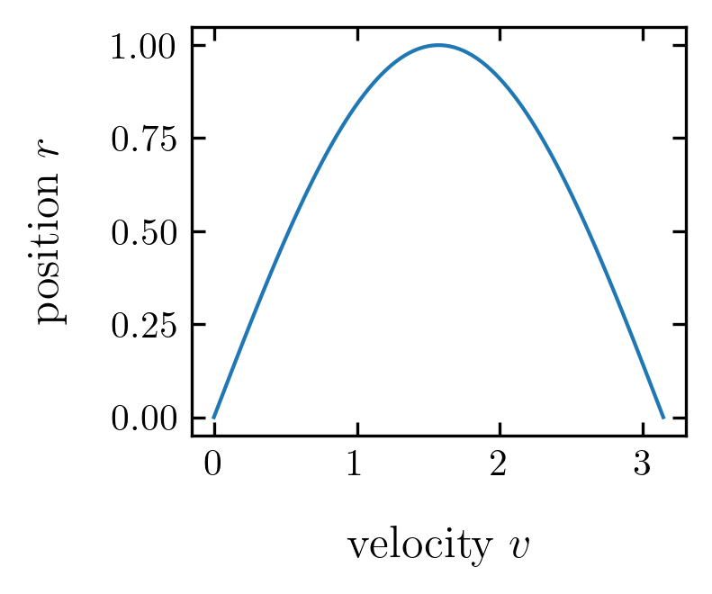

import matplotlib as mpl
import matplotlib.font_manager as font_manager
from IPython.core.display import HTML
import matplotlib.pyplot as plt
import numpy as np
from directory_tree import display_treeZusatz: Erstellung veröffentlichungsreifer Diagramme
Optimale Plotgrößen für wissenschaftliche Arbeiten
In diesem Leitfaden zeige ich Ihnen, wie Sie Plots in einer standardisierten, publikationstauglichen Größe erstellen können. Die Hinweise sind sowohl für Jupyter-Notebooks als auch für wissenschaftliche Arbeiten wie Semesterarbeiten geeignet.
Beim Export von Plots als PDF-Dateien werden Vektorgrafiken erzeugt, die sich nachträglich verlustfrei skalieren lassen. Dies ermöglicht zwar eine flexible Anpassung an ein- oder zweispaltige Layoutformate, kann aber zu Inkonsistenzen führen: Unterschiedliche Skalierungsfaktoren resultieren oft in verschiedenen Größen von Achsenbeschriftungen und Markierungen, was das Gesamtbild der Arbeit beeinträchtigt.
Die bessere Strategie ist es, von Anfang an einheitliche Plotgrößen zu verwenden: - Definieren Sie Standards für ein- und zweispaltige Abbildungen - Legen Sie einheitliche Größen für Achsenbeschriftungen und Markierungen fest - Erstellen Sie alle Plots direkt in der finalen Größe
Im Folgenden stelle ich praktische Techniken vor, mit denen Sie direkt aus Jupyter-Notebooks publikationsreife Plots erstellen und speichern können.
Erstellen eines Diagramms mit einer bestimmten Größe des Begrenzungsrahmens
Wenn Sie einen Plot in matplotlib erstellen, können Sie eine Größe mit dem Parameter figsize festlegen, z.B.
plt.figure(figsize=(3,2))für eine Abbildung mit einer Breite von 3 inches bzw. 7,62 cm und einer Höhe von 2 inches (5,08 cm). Wenn Sie diesen Parameter nicht verwenden oder sogar den Befehl plt.figure() nicht nutzen, verwendet matplotlib die Standardgröße, die häufig 8 inches mal 6 inches beträgt. Diese Standardgröße ist viel zu groß, da die Abbildung dann fast eine ganze A4-Seite breit wäre. Eine angemessene Größe für einen Plot in einer einzelnen Spalte eines zweispaltigen Dokuments wären die oben genannten 3 inches mal 2 inches, da die gesamte Seitenbreite 21 cm minus einem Rand von etwa 3 cm auf jeder Seite eine Spaltenbreite von ungefähr (21-6)/2=7,5 cm ergibt.
Der in Figure 1 gezeigte Plot wurde mit den folgenden Befehlen erstellt
plt.figure(figsize=(3,2), dpi=150)
x=np.linspace(0,np.pi*4,200)
plt.plot(x,np.sin(x),color='k')
plt.xlabel(r"angle $\theta$ in [rad]")
plt.ylabel(r"$\sin(\theta)$")
plt.savefig("figure_example.pdf",
bbox_inches = 'tight')
plt.show()Die daraus resultierende PDF-Datei enthält eine Grafik mit einem Begrenzungsrahmen, der genau 3 Zoll mal 2 Zoll groß ist. Wenn Sie das Diagramm in ein beliebiges Zeichenprogramm wie Adobe Illustrator, Affinity Designer oder sogar in eine Textverarbeitungssoftware wie Word oder Pages einfügen, hat der Begrenzungsrahmen dieses Diagramms genau diese Größe, und Sie können weitere Diagramme anordnen, um eine ganze Abbildung zu erstellen, ohne die Skalierung ändern zu müssen. Wenn Sie das Diagramm in einem zweispaltigen LaTeX-Manuskript verwenden, kann es ohne Skalierung verwendet werden, d.h. durch includegraphics{Figure 1.pdf} wird es in der entsprechenden Größe über eine Spalte angezeigt.
Es gibt noch ein paar weitere Dinge zu beachten.
Während der Begrenzungsrahmen dieser Abbildung diese Größe hat, ist der Achsenrahmen kleiner, und oft bleibt auf der linken/unteren Seite ein gewisser Leerraum zwischen den Achsenbeschriftungen und dem Rand des Begrenzungsrahmens. Das hängt sehr stark von Ihrem spezifischen Diagramm ab. Wie Sie eine Abbildung mit einer festen Achsenrahmengröße erstellen, wird im zweiten Abschnitt behandelt.
Die Schriftgröße auf der Achse beträgt jetzt 10 oder 11 Punkte, was der Schriftgröße der meisten Dokumente entspricht, die Sie mit dieser Abbildung erstellen. Ich habe die folgenden plt.rcParams verwendet: ‘axes.labelsize’: 11, ‘xtick.labelsize’ : 10, ‘ytick.labelsize’ : 10 für die gezeigte Darstellung.
Sie werden auch feststellen, dass die Arbeit mit dieser Abbildungsgröße in einem Jupyter-Notebook nicht gut ist. Das hat damit zu tun, wie Jupyter die Ausgabe in eine PNG-Datei übersetzt, die inline angezeigt wird. Eine Möglichkeit, den Plot im Jupyter-Notebook zu vergrößern, aber die PDF-Größe beizubehalten, besteht darin, den Parameter dpi im Befehl
plt.figure(figsize=(3,2), dpi=150)zu erhöhen. Normalerweise ist er auf dpi=75 eingestellt, was jetzt viel zu klein ist. Eine Einstellung von dpi=150 scheint ein vernünftiger Kompromiss zwischen Bildschirm- und Druckgröße zu sein. Wenn Sie völlig unabhängig sein wollenDer Befehl
plt.savefigverwendet einen zusätzlichenbbox_inches = 'tight'Parameter, der sicherstellt, dass die Boundingbox auch wirklich alle Komponenten des Plots genau umschließt.
plt.rcParams.update({'font.size': 12,
'lines.linewidth': 1,
'lines.markersize': 10,
'axes.labelsize': 11,
'xtick.labelsize' : 10,
'ytick.labelsize' : 10,
'xtick.top' : True,
'xtick.direction' : 'in',
'ytick.right' : True,
'ytick.direction' : 'in',
'figure.dpi': 150})def get_size(w,h):
return((w/2.54,h/2.54))plt.figure(figsize=get_size(7,6))
x=np.linspace(0,np.pi*4,200)
plt.plot(x,np.sin(x),color='k')
plt.xlabel(r"angle $\theta$ in [rad]")
plt.ylabel(r"$\sin(\theta)$")
plt.tight_layout()
plt.savefig("figure_example3.pdf", bbox_inches='tight')
plt.show()
Wenn Sie dieses Bild in eine beliebige Software laden, erhalten Sie ein Bild mit einer Größe, die der eingestellten Breite entspricht.

Erstellen eines Diagramms mit einer bestimmten Achsenrahmengröße
Der Achsenrahmen ist die Box des Rahmens, der die Achsen bereitstellt. Beim Erstellen einer Figur mit dem Befehl plt.figure() wird der Achsenrahmen von matplotlib so berechnet, dass er innerhalb der durch figsize angegebenen Boundingbox liegt, so dass alle Achsenbeschriftungen ebenfalls hineinpassen. Der Achsenrahmen ist daher kleiner als die angegebene Bounding Box und hängt oft von den Achsenbeschriftungen und weiteren Dingen ab. Wenn Sie einen Plot mit einer festen Größe des Achsenrahmens erstellen wollen, ist es sinnvoll, eine Funktion in Ihrem Code unterzubringen, die die Größe des Achsenrahmens festlegt. Diese Funktion könnte lauten
def set_size(w,h, ax=None):
""" w, h: width, height in inches """
if not ax: ax=plt.gca()
l = ax.figure.subplotpars.left
r = ax.figure.subplotpars.right
t = ax.figure.subplotpars.top
b = ax.figure.subplotpars.bottom
figw = float(w)/(r-l)
figh = float(h)/(t-b)
ax.figure.set_size_inches(figw, figh)wobei Sie die gewünschte Breite und Höhe (in Zoll) der aktuellen Achse ax angeben müssen. Die Funktion gibt nichts zurück, sondern legt direkt die Größe fest.
def set_size(w,h, ax=None):
""" w, h: width, height in inches """
if not ax: ax=plt.gca()
l = ax.figure.subplotpars.left
r = ax.figure.subplotpars.right
t = ax.figure.subplotpars.top
b = ax.figure.subplotpars.bottom
figw = float(w)/(r-l)
figh = float(h)/(t-b)
ax.figure.set_size_inches(figw, figh)
fig=plt.figure(dpi=150)
ax=plt.axes()
ax.plot(x,np.sin(x),color='k')
ax.set_xlabel(r"angle $\theta$ in [rad]")
ax.set_ylabel(r"$\sin(\theta)$")
set_size(3,2)
plt.savefig("figure_example2.pdf",bbox_inches = 'tight')
plt.show()
Wenn Sie diese Abbildung in ein Grafikprogramm oder eine Textverarbeitungssoftware laden, sollte das Abbildungsfeld eine Größe von 7,62 cm mal 5,08 cm haben, ohne dass eine Neuskalierung erfolgt:

Auswahl der Schriftarten
Matplotlib kann auf eine Reihe von verschiedenen Schriftarten zugreifen. Es kann schwierig sein, die passende Schriftart für den Formelstil Ihres Dokuments oder Ihrer Publikation zu finden. Eine Liste der Schriftarten, die Matplotlib zur Verfügung stehen, kann mit dem folgenden Codeschnipsel abgerufen werden, den ich hier gefunden habe.
from IPython.display import HTML, display
def make_html(fontname):
return "<p>{font}: <span style='font-family:{font}; font-size: 24px;'>{font}</p>".format(font=fontname)
code = "\n".join([make_html(font) for font in sorted(set([f.name for f in font_manager.fontManager.ttflist]))])
display(HTML("<div style='column-count: 2;'>{}</div>".format(code))).Aqua Kana: .Aqua Kana
.CJK Symbols Fallback HK: .CJK Symbols Fallback HK
.Keyboard: .Keyboard
.New York: .New York
.SF Arabic: .SF Arabic
.SF Arabic Rounded: .SF Arabic Rounded
.SF Armenian: .SF Armenian
.SF Armenian Rounded: .SF Armenian Rounded
.SF Camera: .SF Camera
.SF Compact: .SF Compact
.SF Compact Rounded: .SF Compact Rounded
.SF Georgian: .SF Georgian
.SF Georgian Rounded: .SF Georgian Rounded
.SF Hebrew: .SF Hebrew
.SF Hebrew Rounded: .SF Hebrew Rounded
.SF NS Mono: .SF NS Mono
.SF NS Rounded: .SF NS Rounded
.SF Soft Numeric: .SF Soft Numeric
.ThonburiUI: .ThonburiUI
Academy Engraved LET: Academy Engraved LET
Agency FB: Agency FB
Al Bayan: Al Bayan
Al Nile: Al Nile
Al Tarikh: Al Tarikh
American Typewriter: American Typewriter
Andale Mono: Andale Mono
Apple Braille: Apple Braille
Apple Chancery: Apple Chancery
Apple SD Gothic Neo: Apple SD Gothic Neo
Apple Symbols: Apple Symbols
AppleGothic: AppleGothic
AppleMyungjo: AppleMyungjo
Arial: Arial
Arial Black: Arial Black
Arial Hebrew: Arial Hebrew
Arial Narrow: Arial Narrow
Arial Rounded MT Bold: Arial Rounded MT Bold
Arial Unicode MS: Arial Unicode MS
Artifakt Element: Artifakt Element
Athelas: Athelas
Avenir: Avenir
Avenir Next: Avenir Next
Avenir Next Condensed: Avenir Next Condensed
Ayuthaya: Ayuthaya
Baghdad: Baghdad
Bangla MN: Bangla MN
Bangla Sangam MN: Bangla Sangam MN
Baskerville: Baskerville
Beirut: Beirut
Big Caslon: Big Caslon
Bodoni 72: Bodoni 72
Bodoni 72 Oldstyle: Bodoni 72 Oldstyle
Bodoni 72 Smallcaps: Bodoni 72 Smallcaps
Bodoni Ornaments: Bodoni Ornaments
Bradley Hand: Bradley Hand
Brush Script MT: Brush Script MT
Chalkboard: Chalkboard
Chalkboard SE: Chalkboard SE
Chalkduster: Chalkduster
Charter: Charter
Cochin: Cochin
Comic Sans MS: Comic Sans MS
Copperplate: Copperplate
Corsiva Hebrew: Corsiva Hebrew
Courier: Courier
Courier New: Courier New
DIN Alternate: DIN Alternate
DIN Condensed: DIN Condensed
Damascus: Damascus
DecoType Naskh: DecoType Naskh
DejaVu Sans: DejaVu Sans
DejaVu Sans Display: DejaVu Sans Display
DejaVu Sans Mono: DejaVu Sans Mono
DejaVu Serif: DejaVu Serif
DejaVu Serif Display: DejaVu Serif Display
Devanagari MT: Devanagari MT
Devanagari Sangam MN: Devanagari Sangam MN
Didot: Didot
Diwan Kufi: Diwan Kufi
Diwan Thuluth: Diwan Thuluth
Euphemia UCAS: Euphemia UCAS
Farah: Farah
Farisi: Farisi
Futura: Futura
Galvji: Galvji
Geeza Pro: Geeza Pro
Geneva: Geneva
Georgia: Georgia
Gill Sans: Gill Sans
Gujarati MT: Gujarati MT
Gujarati Sangam MN: Gujarati Sangam MN
Gurmukhi MN: Gurmukhi MN
Gurmukhi MT: Gurmukhi MT
Gurmukhi Sangam MN: Gurmukhi Sangam MN
Heiti TC: Heiti TC
Helvetica: Helvetica
Helvetica Neue: Helvetica Neue
Herculanum: Herculanum
Hiragino Maru Gothic Pro: Hiragino Maru Gothic Pro
Hiragino Mincho ProN: Hiragino Mincho ProN
Hiragino Sans: Hiragino Sans
Hiragino Sans GB: Hiragino Sans GB
Hoefler Text: Hoefler Text
ITF Devanagari: ITF Devanagari
Impact: Impact
InaiMathi: InaiMathi
Iowan Old Style: Iowan Old Style
Kailasa: Kailasa
Kannada MN: Kannada MN
Kannada Sangam MN: Kannada Sangam MN
Kefa: Kefa
Khmer MN: Khmer MN
Khmer Sangam MN: Khmer Sangam MN
Kohinoor Bangla: Kohinoor Bangla
Kohinoor Devanagari: Kohinoor Devanagari
Kohinoor Gujarati: Kohinoor Gujarati
Kohinoor Telugu: Kohinoor Telugu
Kokonor: Kokonor
Krungthep: Krungthep
KufiStandardGK: KufiStandardGK
Lao MN: Lao MN
Lao Sangam MN: Lao Sangam MN
Lucida Grande: Lucida Grande
Luminari: Luminari
Malayalam MN: Malayalam MN
Malayalam Sangam MN: Malayalam Sangam MN
Marion: Marion
Marker Felt: Marker Felt
Menlo: Menlo
Microsoft Sans Serif: Microsoft Sans Serif
Mishafi: Mishafi
Mishafi Gold: Mishafi Gold
Monaco: Monaco
Mshtakan: Mshtakan
Mukta Mahee: Mukta Mahee
Muna: Muna
Myanmar MN: Myanmar MN
Myanmar Sangam MN: Myanmar Sangam MN
Nadeem: Nadeem
New Peninim MT: New Peninim MT
Noteworthy: Noteworthy
Noto Nastaliq Urdu: Noto Nastaliq Urdu
Noto Sans Adlam: Noto Sans Adlam
Noto Sans Armenian: Noto Sans Armenian
Noto Sans Avestan: Noto Sans Avestan
Noto Sans Bamum: Noto Sans Bamum
Noto Sans Bassa Vah: Noto Sans Bassa Vah
Noto Sans Batak: Noto Sans Batak
Noto Sans Bhaiksuki: Noto Sans Bhaiksuki
Noto Sans Brahmi: Noto Sans Brahmi
Noto Sans Buginese: Noto Sans Buginese
Noto Sans Buhid: Noto Sans Buhid
Noto Sans Canadian Aboriginal: Noto Sans Canadian Aboriginal
Noto Sans Carian: Noto Sans Carian
Noto Sans Caucasian Albanian: Noto Sans Caucasian Albanian
Noto Sans Chakma: Noto Sans Chakma
Noto Sans Cham: Noto Sans Cham
Noto Sans Coptic: Noto Sans Coptic
Noto Sans Cuneiform: Noto Sans Cuneiform
Noto Sans Cypriot: Noto Sans Cypriot
Noto Sans Duployan: Noto Sans Duployan
Noto Sans Egyptian Hieroglyphs: Noto Sans Egyptian Hieroglyphs
Noto Sans Elbasan: Noto Sans Elbasan
Noto Sans Glagolitic: Noto Sans Glagolitic
Noto Sans Gothic: Noto Sans Gothic
Noto Sans Gunjala Gondi: Noto Sans Gunjala Gondi
Noto Sans Hanifi Rohingya: Noto Sans Hanifi Rohingya
Noto Sans Hanunoo: Noto Sans Hanunoo
Noto Sans Hatran: Noto Sans Hatran
Noto Sans Imperial Aramaic: Noto Sans Imperial Aramaic
Noto Sans Inscriptional Pahlavi: Noto Sans Inscriptional Pahlavi
Noto Sans Inscriptional Parthian: Noto Sans Inscriptional Parthian
Noto Sans Javanese: Noto Sans Javanese
Noto Sans Kaithi: Noto Sans Kaithi
Noto Sans Kannada: Noto Sans Kannada
Noto Sans Kayah Li: Noto Sans Kayah Li
Noto Sans Kharoshthi: Noto Sans Kharoshthi
Noto Sans Khojki: Noto Sans Khojki
Noto Sans Khudawadi: Noto Sans Khudawadi
Noto Sans Lepcha: Noto Sans Lepcha
Noto Sans Limbu: Noto Sans Limbu
Noto Sans Linear A: Noto Sans Linear A
Noto Sans Linear B: Noto Sans Linear B
Noto Sans Lisu: Noto Sans Lisu
Noto Sans Lycian: Noto Sans Lycian
Noto Sans Lydian: Noto Sans Lydian
Noto Sans Mahajani: Noto Sans Mahajani
Noto Sans Mandaic: Noto Sans Mandaic
Noto Sans Manichaean: Noto Sans Manichaean
Noto Sans Marchen: Noto Sans Marchen
Noto Sans Masaram Gondi: Noto Sans Masaram Gondi
Noto Sans Meetei Mayek: Noto Sans Meetei Mayek
Noto Sans Mende Kikakui: Noto Sans Mende Kikakui
Noto Sans Meroitic: Noto Sans Meroitic
Noto Sans Miao: Noto Sans Miao
Noto Sans Modi: Noto Sans Modi
Noto Sans Mongolian: Noto Sans Mongolian
Noto Sans Mro: Noto Sans Mro
Noto Sans Multani: Noto Sans Multani
Noto Sans Myanmar: Noto Sans Myanmar
Noto Sans NKo: Noto Sans NKo
Noto Sans Nabataean: Noto Sans Nabataean
Noto Sans New Tai Lue: Noto Sans New Tai Lue
Noto Sans Newa: Noto Sans Newa
Noto Sans Ol Chiki: Noto Sans Ol Chiki
Noto Sans Old Hungarian: Noto Sans Old Hungarian
Noto Sans Old Italic: Noto Sans Old Italic
Noto Sans Old North Arabian: Noto Sans Old North Arabian
Noto Sans Old Permic: Noto Sans Old Permic
Noto Sans Old Persian: Noto Sans Old Persian
Noto Sans Old South Arabian: Noto Sans Old South Arabian
Noto Sans Old Turkic: Noto Sans Old Turkic
Noto Sans Oriya: Noto Sans Oriya
Noto Sans Osage: Noto Sans Osage
Noto Sans Osmanya: Noto Sans Osmanya
Noto Sans Pahawh Hmong: Noto Sans Pahawh Hmong
Noto Sans Palmyrene: Noto Sans Palmyrene
Noto Sans Pau Cin Hau: Noto Sans Pau Cin Hau
Noto Sans PhagsPa: Noto Sans PhagsPa
Noto Sans Phoenician: Noto Sans Phoenician
Noto Sans Psalter Pahlavi: Noto Sans Psalter Pahlavi
Noto Sans Rejang: Noto Sans Rejang
Noto Sans Samaritan: Noto Sans Samaritan
Noto Sans Saurashtra: Noto Sans Saurashtra
Noto Sans Sharada: Noto Sans Sharada
Noto Sans Siddham: Noto Sans Siddham
Noto Sans Sora Sompeng: Noto Sans Sora Sompeng
Noto Sans Sundanese: Noto Sans Sundanese
Noto Sans Syloti Nagri: Noto Sans Syloti Nagri
Noto Sans Syriac: Noto Sans Syriac
Noto Sans Tagalog: Noto Sans Tagalog
Noto Sans Tagbanwa: Noto Sans Tagbanwa
Noto Sans Tai Le: Noto Sans Tai Le
Noto Sans Tai Tham: Noto Sans Tai Tham
Noto Sans Tai Viet: Noto Sans Tai Viet
Noto Sans Takri: Noto Sans Takri
Noto Sans Thaana: Noto Sans Thaana
Noto Sans Tifinagh: Noto Sans Tifinagh
Noto Sans Tirhuta: Noto Sans Tirhuta
Noto Sans Ugaritic: Noto Sans Ugaritic
Noto Sans Vai: Noto Sans Vai
Noto Sans Wancho: Noto Sans Wancho
Noto Sans Warang Citi: Noto Sans Warang Citi
Noto Sans Yi: Noto Sans Yi
Noto Serif Ahom: Noto Serif Ahom
Noto Serif Balinese: Noto Serif Balinese
Noto Serif Hmong Nyiakeng: Noto Serif Hmong Nyiakeng
Noto Serif Myanmar: Noto Serif Myanmar
Noto Serif Yezidi: Noto Serif Yezidi
Optima: Optima
Oriya MN: Oriya MN
Oriya Sangam MN: Oriya Sangam MN
PT Mono: PT Mono
PT Sans: PT Sans
PT Serif: PT Serif
PT Serif Caption: PT Serif Caption
Palatino: Palatino
Papyrus: Papyrus
Party LET: Party LET
Phosphate: Phosphate
Plantagenet Cherokee: Plantagenet Cherokee
Raanana: Raanana
Rockwell: Rockwell
SF Grandezza: SF Grandezza
STIX Two Math: STIX Two Math
STIX Two Text: STIX Two Text
STIXGeneral: STIXGeneral
STIXIntegralsD: STIXIntegralsD
STIXIntegralsSm: STIXIntegralsSm
STIXIntegralsUp: STIXIntegralsUp
STIXIntegralsUpD: STIXIntegralsUpD
STIXIntegralsUpSm: STIXIntegralsUpSm
STIXNonUnicode: STIXNonUnicode
STIXSizeFiveSym: STIXSizeFiveSym
STIXSizeFourSym: STIXSizeFourSym
STIXSizeOneSym: STIXSizeOneSym
STIXSizeThreeSym: STIXSizeThreeSym
STIXSizeTwoSym: STIXSizeTwoSym
STIXVariants: STIXVariants
Sana: Sana
Sathu: Sathu
Savoye LET: Savoye LET
Seravek: Seravek
Shree Devanagari 714: Shree Devanagari 714
SignPainter: SignPainter
Silom: Silom
Sinhala MN: Sinhala MN
Sinhala Sangam MN: Sinhala Sangam MN
Skia: Skia
Snell Roundhand: Snell Roundhand
Songti SC: Songti SC
Sukhumvit Set: Sukhumvit Set
Superclarendon: Superclarendon
Symbol: Symbol
System Font: System Font
Tahoma: Tahoma
Tamil MN: Tamil MN
Tamil Sangam MN: Tamil Sangam MN
Telugu MN: Telugu MN
Telugu Sangam MN: Telugu Sangam MN
Thonburi: Thonburi
Times: Times
Times New Roman: Times New Roman
Trattatello: Trattatello
Trebuchet MS: Trebuchet MS
Verdana: Verdana
Waseem: Waseem
Webdings: Webdings
Wingdings: Wingdings
Wingdings 2: Wingdings 2
Wingdings 3: Wingdings 3
Zapf Dingbats: Zapf Dingbats
Zapfino: Zapfino
cmb10: cmb10
cmex10: cmex10
cmmi10: cmmi10
cmr10: cmr10
cmss10: cmss10
cmsy10: cmsy10
cmtt10: cmtt10
Falls Sie Ihr Dokument in LaTeX schreiben, könnten die cmXXXX-Schriften für Sie von Interesse sein, da sie den in LaTeX-Dokumenten verwendeten Schriften entsprechen. Hier ist ein Beispiel:
cmfont = font_manager.FontProperties(fname=mpl.get_data_path() + '/fonts/ttf/cmr10.ttf')
plt.rcParams.update({'font.size': 12,
'axes.titlesize': 12,
'axes.labelsize': 12,
'axes.labelpad': 12,
'lines.linewidth': 1,
'lines.markersize': 10,
'xtick.labelsize' : 10,
'ytick.labelsize' : 10,
'xtick.top' : True,
'xtick.direction' : 'in',
'ytick.right' : True,
'ytick.direction' : 'in',
'font.family' : 'serif',
'font.serif' : cmfont.get_name(),
"axes.formatter.use_mathtext": True,
'text.usetex': True,
'mathtext.fontset' : 'cm'
})x=np.linspace(0,np.pi,100)plt.figure(figsize=get_size(6,5),dpi=150)
plt.plot(x,np.sin(x))
plt.xlabel(r"velocity $v$")
plt.ylabel(r"position $r$")
plt.show()
Ein Dokument vorbereiten
Wenn man ein Dokument (Bachelorarbeit z.B.) erstellt, ist es nützlich, seine Daten und Texte geschickt zur organisieren, um sich Arbeit zu ersparen. Hier ist ein Beipiel,
display_tree("Report")Report/
├── Figures/
│ ├── Figure1/
│ │ ├── Figure1.html
│ │ ├── Figure1.ipynb
│ │ └── Figure1_files/
│ │ └── figure-html/
│ │ └── cell-5-output-1.png
│ ├── figure1.pdf
│ ├── Figure2/
│ │ ├── Figure2.html
│ │ ├── Figure2.ipynb
│ │ └── Figure2_files/
│ │ └── figure-html/
│ │ └── cell-5-output-1.png
│ └── figure2.pdf
└── Text/
├── article.aux
├── article.fdb_latexmk
├── article.fls
├── article.log
├── article.pdf
├── article.synctex.gz
├── article.tex
├── content/
│ ├── 01_introduction.tex
│ ├── 02_theory.tex
│ ├── 03_results.tex
│ └── 04_conclusions.tex
├── paper.aux
├── paper.bbl
├── paper.blg
├── paper.fdb_latexmk
├── paper.fls
├── paper.log
├── paper.pdf
├── paper.synctex.gz
├── paper.tex
└── paperNotes.bib/var/folders/6n/52yj404d5ld29901s85pd6sh0000gn/T/ipykernel_98559/929351223.py:1: DeprecationWarning:
The `display_tree` Function is Deprecated and will be Removed in a Future Release. Please use `DirectoryTree` Instead. End of Life Date is "31st December 2024".